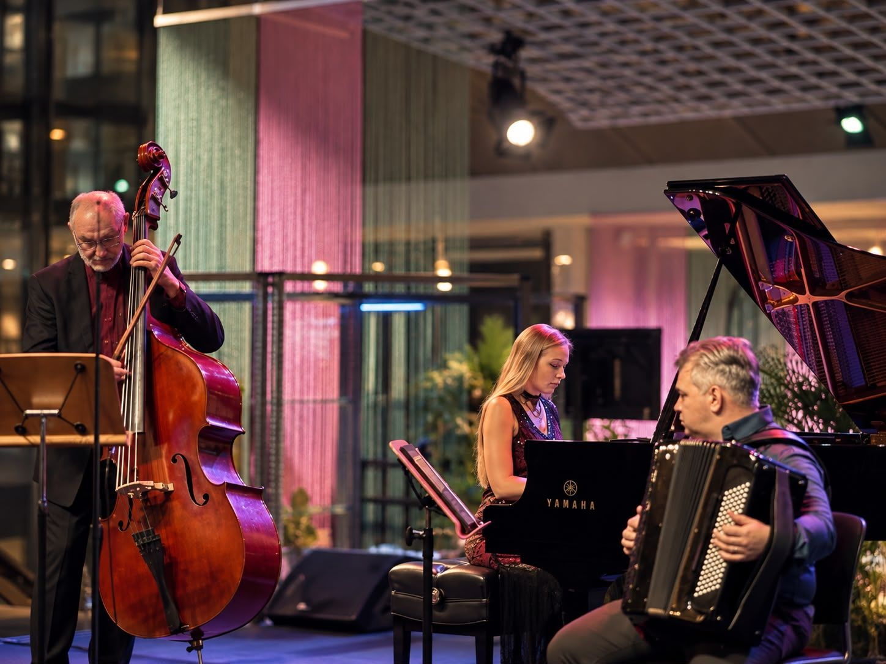
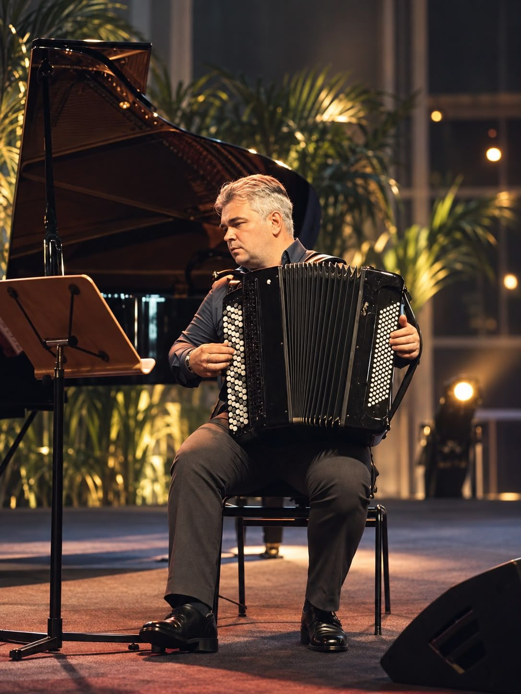
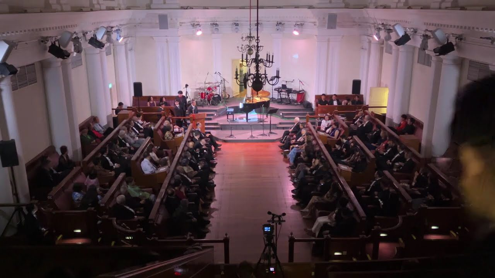

Accordion & double bass · Singapore
Two instruments that make a room go quiet.
A&G Academy is the duo of accordionist Aleks Farseev and Guennadi Mouzyka, Principal Bass of the Singapore Symphony Orchestra. Russian folk, French musette and Argentine tango — played live at your event, taught in our studio, and sold as instruments you can actually grow into.

What we do
Perform. Teach. Equip.
Live performance
Weddings, corporate evenings, gallery openings, National Day receptions. Duo or trio, acoustic or amplified, 30 to 90 minutes, repertoire built around your guests.
Check a dateLessons
Accordion and bayan with Aleks; double bass and chamber coaching with Guennadi; piano with Kseniia. From absolute beginner at seven or seventy, through to conservatory audition preparation.
See lessonsAccordion shop
Buy an accordion from us — fourteen accordions in stock in Singapore, S$1,556 to S$4,677, the same ones we teach on. Pick the bass side on the card and check out online.
Shop accordions →Our music
Watch before you book.
One trio programme and two solo voices. Nothing staged for a promo — these are performances as they happened.




The score library
740+ scores, free, in seven languages.
The Accordion Score Library stays exactly where it is — a free, graded, multilingual catalogue for accordion and bayan players anywhere. Grade 1 through Virtuoso, searchable by composer and genre.
Open the libraryWhy it's free.
Most people who want to try the accordion never meet one. The library removes the second obstacle after the instrument itself: something worth playing on it, at the right level, in a language you read.